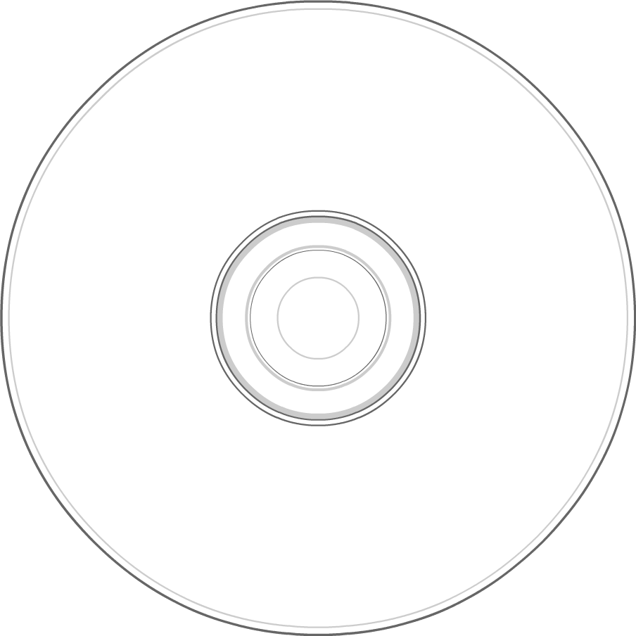

0:00
0:00
PREVIOUS
PLAY/PAUSE
STOP
NEXT
SELECT TRACK：
01 - Speak To Me
02 - Breathe (In The Air)
03 - On The Run
04 - Time
05 - The Great Gig In The Sky
06 - Money
07 - Us And Them
08 - Any Colour You Like
09 - Brain Damage
10 - Eclipse